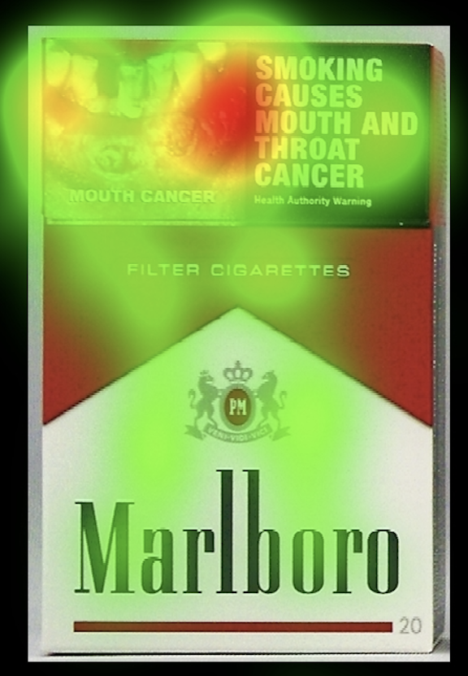
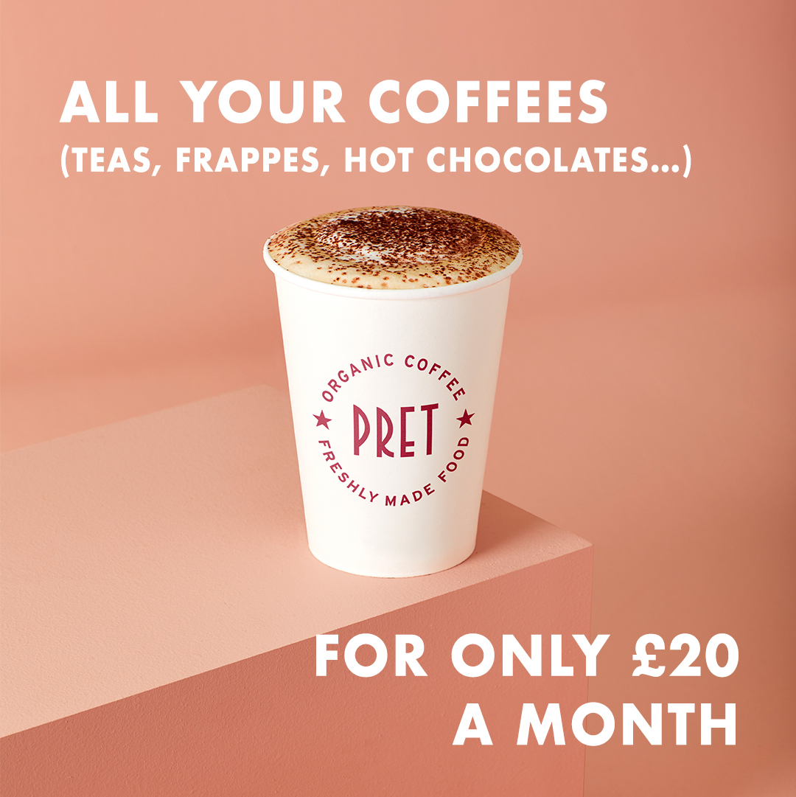

Fatema Daij
About
Blog
Contact
This is where I write about things I find interesting.

Why does attention differ between standardised tobacco packets with health warning labels (HWLs) and branded tobacco packets?
23 April, 2024

Pret's 'Club Pret' subscription: why does it work?
28 April, 2024
An assessment of the approach to alignment research by Leike et al.
1 May, 2024